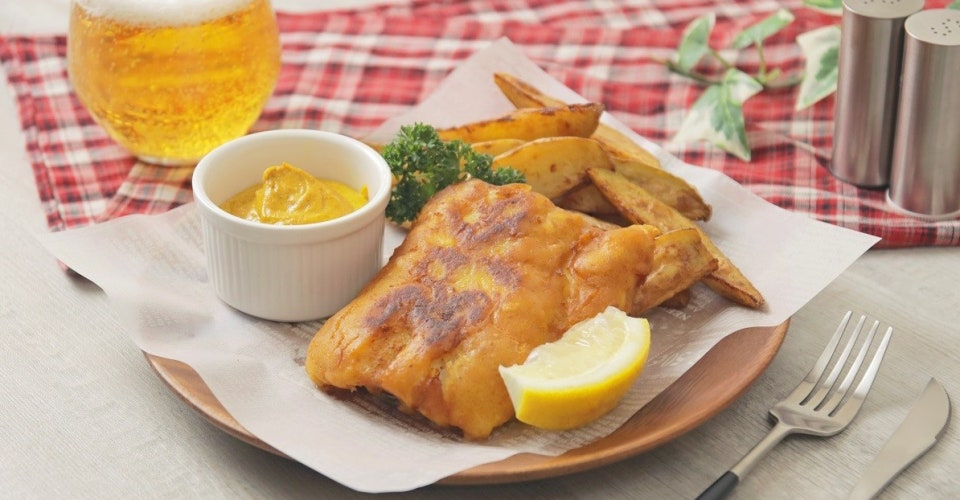
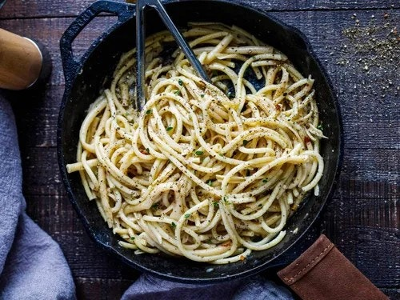
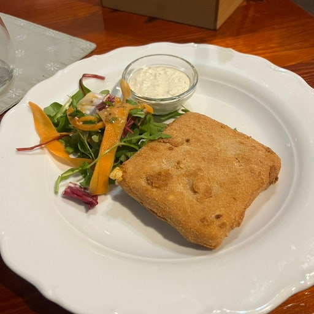
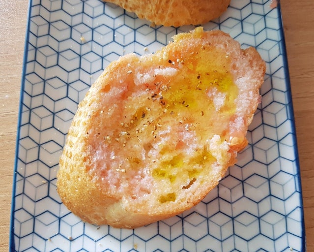

파리 (Paris, France)
예술과 낭만의 도시. 세느 강변을 따라 미식과 문화를 즐길 수 있는 유럽의 중심지.
- 루브르 박물관: louvre.fr
- 에펠탑: toureiffel.paris
- 베르사유 궁전: chateauversailles.fr
- 생트샤펠: sainte-chapelle.fr
- 노트르담 대성당: notredamedeparis.fr
💡 Paris Museum Pass로 우선 입장 가능.
*소매치기 주의!
😋 크로 무슈 (Croque Monsieur)

프랑스식 햄·치즈 토스트에 베샤멜 소스와 치즈를 올려 노릇하게 구운 요리. 준비가 간단하고 숙소 주방에서도 쉽게 만들 수 있어요.
재료 (2인분)
- 식빵 또는 바게트 슬라이스 4장
- 햄 4장
- 그뤼예르 또는 에멘탈 치즈 100g (슬라이스/갈은 것)
- 버터 20g + 굽기용 약간
- 디종 머스터드 약간 (선택)
- 베샤멜 소스
- 버터 20g
- 밀가루 20g
- 우유 200mL
- 소금·후추, 넛맥 약간(선택)
만드는 법
- 베샤멜: 냄비에 버터를 녹이고 밀가루를 넣어 1~2분 약불로 볶아요. 우유를 나눠 붓고 저어가며 걸쭉해질 때까지 끓인 뒤 소금·후추(넛맥 선택)로 맛을 맞춥니다.
- 식빵 한 면에 버터를 살짝 바르고 팬에서 옅게 노릇하게 구워 겉면을 바삭하게 만듭니다.
- 구운 빵의 안쪽 면에 머스터드를 바른 뒤 햄→치즈→베샤멜 순으로 올립니다.
- 다른 빵으로 덮고 위에도 치즈를 살짝 더 올립니다.
- 오븐(200℃ 예열) 또는 팬+뚜껑으로 치즈가 녹고 윗면이 노릇해질 때까지 5~8분 굽습니다.
- 반으로 자르고 샐러드나 감자와 곁들여 제공합니다.
런던 (London, United Kingdom)
왕실 전통과 현대 감성이 어우러진 도시. 뮤지컬, 예술, 공원 등 볼거리 가득.
- 버킹엄 궁전: royalparks.org.uk
- 빅벤 & 웨스트민스터 궁전: parliament.uk
- 웨스트민스터 사원: westminster-abbey.org
- 런던아이: londoneye.com
- 대영박물관: britishmuseum.org
💡 Oyster 카드로 교통비 절약.
*비가 자주 오니 우산 필수!
😋 피시 앤 칩스 (Fish & Chips)
런던 대표 거리 음식. 바삭한 흰살 생선 튀김과 감자튀김을 타르타르 소스나 식초와 곁들여 먹어요. 숙소에서도 재료만 있으면 간단히 만들 수 있어요.
재료 (2인분)
- 흰살 생선 필레 2조각(대구·대서양대구 등, 총 300~350g)
- 감자 큰 것 2개(프라이용)
- 중력분 100g + 묻히기용 약간
- 베이킹파우더 1작은술
- 차가운 탄산수 150~180mL
- 소금·후추, 레몬 조각
- 식용유 (튀김용)
- 타르타르 소스 또는 몰트식초(선택)
만드는 법
- 감자는 막대 모양으로 썰어 찬물에 전분을 살짝 빼고 물기 제거.
- 기름 170℃로 달군 뒤 감자를 4~5분 1차로 튀겨 꺼내 식힙니다.
- 반죽: 밀가루 100g, 베이킹파우더, 소금 한 꼬집을 섞고 차가운 탄산수를 넣어 묽게 만듭니다.
- 생선에 소금·후추를 뿌리고 밀가루를 얇게 묻힌 뒤 반죽에 담갔다가 180℃ 기름에 4~6분 노릇하게 튀깁니다.
- 감자를 다시 190℃에서 1~2분 재튀겨 바삭하게 합니다.
- 레몬과 소스와 함께 곁들여 제공합니다.
로마 (Rome, Italy)
고대 유적과 예술이 공존하는 도시. 바티칸과 함께 유럽 문명의 중심지.
- 콜로세움: coopculture.it
- 바티칸 박물관: museivaticani.va
- 판테온: turismoroma.it
- 트레비 분수: trevi-fountain
💡 대부분 도보로 이동 가능.
여름엔 오전·저녁 일정 추천!
😋 카시오 에 페페 (Cacio e Pepe)
로마의 미니멀 파스타. 페코리노 로마노와 후추만으로 크리미한 소스를 만들어요. 재료가 적어 여행 중에도 만들기 좋아요.
재료 (2인분)
- 스파게티 200g
- 페코리노 로마노 간 것 80g(없으면 파르미지아노 일부 섞기)
- 굵게 간 후추 1큰술+
- 소금(파스타 물용), 올리브오일 약간(선택)
만드는 법
- 끓는 소금물에 파스타를 알덴테로 삶습니다. 파스타 물 200mL 정도 남겨둡니다.
- 팬을 중약불로 달구고 후추를 마른 팬에 살짝 볶아 향을 내요. 파스타 물 80~100mL를 부어 후추물을 만듭니다.
- 면을 팬에 넣고 섞으며 전분이 배어 나오게 1~2분 졸입니다.
- 불을 끄고 치즈를 나눠 넣어가며 거품내듯 섞습니다(필요 시 파스타 물로 농도 조절).
- 크리미하게 코팅되면 접시에 담고 후추를 추가로 갈아 마무리.
프라하 (Prague, Czech Republic)
중세 분위기를 그대로 간직한 낭만의 도시. 야경이 아름답기로 유명.
- 프라하 성: hrad.cz
- 카를교: prague.eu
- 올드타운 광장: old-town-square
💡 Prague Visitor Pass로 교통·명소 할인!
😋 스마제니 시르 (Smažený Sýr, 체코식 치즈까스)
프라하 길거리에서도 흔한 치즈 커틀릿. 겉은 바삭, 속은 쭉 늘어나는 간단한 체코식 안주/간식이에요.
재료 (2인분)
- 에담·고다 등 단단한 치즈 블록 250~300g(두껍게 2~4조각)
- 밀가루 · 달걀 2개 · 빵가루 각 적당량
- 소금·후추, 식용유(넉넉히)
- 번(빵) 또는 샐러드, 타르타르 소스(선택)
만드는 법
- 치즈를 1.5cm 두께로 썰고 키친타월로 물기를 제거합니다.
- 밀가루 → 달걀 → 빵가루 순으로 꼼꼼히 두 번 입혀(이중 코팅) 새지 않게 합니다.
- 기름을 170~180℃로 달군 뒤 치즈를 1~2분씩 앞뒤로 노릇하게 튀깁니다.
- 기름을 빼고 소금 한 꼬집, 소스와 함께 즉시 제공합니다.
바르셀로나 (Barcelona, Spain)
가우디 예술과 지중해 감성이 만난 도시. 타파스와 해변이 매력적!
- 사그라다 파밀리아: sagradafamilia.org
- 구엘 공원: parkguell.barcelona
- 카사 바트요: casabatllo.es
💡 주요 명소는 예약 필수.
해변과 도심이 가까워 일정 조정 쉬움.
😋 판 콘 토마테 (Pa amb tomàquet)
바르셀로나/카탈루냐의 국민 브런치. 토마토와 올리브오일을 빵에 문질러 간단하게 즐기는 메뉴예요.
재료 (2인분)
- 시골빵·바게트 슬라이스 4~6장
- 잘 익은 토마토 2개(반으로 자르기)
- 마늘 1쪽(반으로 자르기, 선택)
- 엑스트라버진 올리브오일 2~3큰술
- 소금(플레이크 소금이면 더 좋아요)
- 하몽/안초비(선택 토핑)
만드는 법
- 빵을 토스터나 팬에 바삭하게 굽습니다.
- (선택) 마늘 단면을 빵에 살짝 문질러 향을 입혀요.
- 토마토 단면을 빵에 문질러 과육과 즙을 스며들게 합니다.
- 올리브오일을 넉넉히 두르고 소금을 뿌립니다.
- 취향에 따라 하몽, 안초비 등을 올려 제공합니다.
서울 (Seoul, South Korea)
전통과 현대가 공존하는 도시. K-culture와 미식의 중심지.
- 경복궁: gyeongbokgung.jsp
- 남산서울타워: seoultower.co.kr
- 북촌 한옥마을: visitseoul.net
💡 교통카드로 편리한 이동.
시장·길거리 음식은 현금 유용!
😋 김치볶음밥 (Kimchi Fried Rice)
서울에서 빠질 수 없는 김치의 매력! 재료가 단순하고 한 팬으로 뚝딱 만들어 여행자에게 특히 좋아요.
재료 (2인분)
- 밥 2공기(되도록 식은 밥)
- 익은 김치 1컵(먹기 좋게 자르기) + 김치국물 2큰술
- 대파 1대, 식용유 1~2큰술, 참기름 1큰술
- 고추장 1큰술, 간장 1작은술, 설탕 1작은술(선택)
- 스팸/삼겹살/베이컨 100g(선택)
- 계란 2개, 김가루·통깨 약간
만드는 법
- 팬에 기름을 두르고 대파를 볶아 파기름을 만듭니다.
- (선택) 고기류를 넣어 노릇하게 볶은 뒤 김치를 넣고 수분이 줄 때까지 볶아요.
- 고추장, 간장, 김치국물을 넣어 향을 내고 밥을 넣어 고루 비비듯 볶습니다.
- 불을 끄고 참기름을 두른 뒤 접시에 담습니다.
- 프라이드에그를 올리고 김가루·통깨로 마무리.